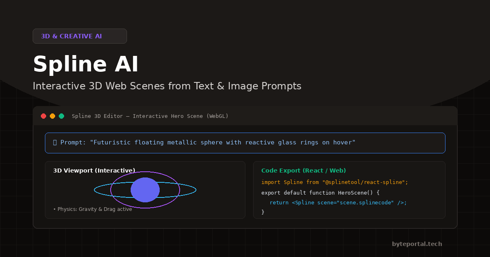
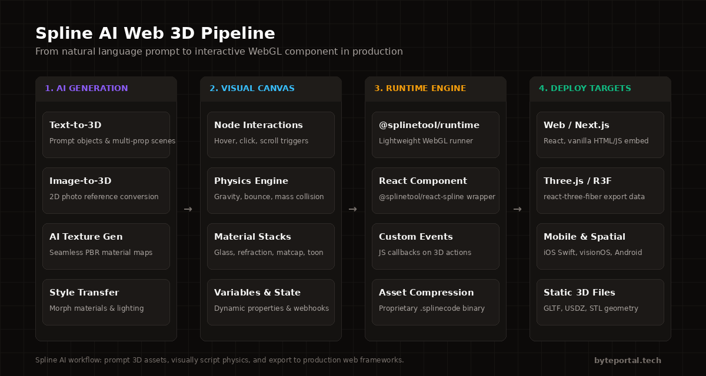

Spline AI: Build Interactive 3D Web Scenes from Text Prompts
· 5 min read
Adding interactive 3D to a landing page has always been a painful slog. You open Blender, wrestle with UV unwrapping and texture baking, export an unwieldy GLTF file, and then spend two days writing Three.js boilerplate just to make an object rotate when the user hovers over it.
Spline AI short-circuits that entire pipeline. You describe what you want in plain words, generate 3D assets directly in your browser, configure physics with visual triggers, and export production-ready React or vanilla HTML snippets.
Quick Summary (The Short Version)
- • What it is: A web-based 3D design platform with integrated generative AI tools for Text-to-3D, Image-to-3D, AI texture creation, and real-time interactive physics.
- • What it does: Lets you generate 3D objects from text prompts, add mouse-following physics without writing shaders, and drop the result into React or HTML via a lightweight runtime.
- • Where it stops: WebGL scenes add 3MB to 15MB to your page payload. The free tier places a watermark on embeds, while full code exports and raw GLTF downloads require the $30/month Pro tier.

What Spline AI actually does (and what it skips)
Spline AI is not another generic text-to-image generator. It generates actual polygonal meshes and textured 3D scenes that you can orbit, light, scale, and animate.
Inside the web editor, you open the prompt bar and type what you need: a metallic floating robot, an isometric server rack, or an abstract glass shape. The AI model synthesizes multiple 3D variations directly on your canvas. If you have a reference sketch or product logo, its Image-to-3D feature reconstructs a 3D volume from a front-facing 2D photo.
Beyond raw geometry, Spline AI handles surface styling. You can prompt AI textures to generate seamless physically based rendering (PBR) maps, or use style transfer to turn flat plastic meshes into frosted glass, chrome, or claymation. You bypass the traditional cycle of modeling in desktop software and manually mapping texture coordinates.
Interactive physics without writing Three.js shaders
The real separator between a static 3D illustration and an engaging web asset is interactivity. Traditionally, getting a 3D model to react to mouse movement required raycasting, quaternion math, and animation event loops in raw WebGL.
Spline handles this through a visual event system. You select any object in your scene, add an event trigger like Mouse Hover, Scroll, or Key Down, and define the resulting state change. You can configure camera orbit angles, color transitions, or spring animations in seconds.
It also includes a built-in physics engine. You can enable gravity, collision boundaries, and mass on objects. When a user drags a 3D token across the screen, it collides naturally with other shapes and bounces off ground planes. You get fluid, tactile micro-interactions with zero JavaScript math.

Show, don't tell: dropping a 3D scene into React or HTML
Once your 3D scene looks right, exporting it does not mean configuring a custom Three.js canvas. Spline compiles your assets into a proprietary compressed .splinecode bundle.
To embed your scene in a standard HTML landing page, you drop in the custom element viewer:
<!-- Load the Spline viewer web component -->
<script type="module" src="https://unpkg.com/@splinetool/viewer/build/spline-viewer.js"></script>
<!-- Embed the interactive 3D canvas -->
<spline-viewer url="https://prod.spline.design/example-id/scene.splinecode"></spline-viewer>In a React or Next.js application, install @splinetool/react-spline and import the component:
import Spline from '@splinetool/react-spline';
export default function HeroScene() {
return (
<div className="w-full h-96">
<Spline scene="https://prod.spline.design/example-id/scene.splinecode" />
</div>
);
}The runtime takes care of WebGL context creation, resize handlers, and touch gestures automatically.
What breaks at 2 a.m. (the real performance costs)
Spline AI makes 3D creation accessible, but web graphics carry hard physical trade-offs:
1. Heavy asset payloads hurt Core Web Vitals. A complex 3D scene easily adds 4MB to 12MB of compressed mesh data and textures to your initial page load. On mobile connections, this delays Largest Contentful Paint (LCP) and consumes user data. Always defer loading below-the-fold scenes or gate initialization behind a user click.
2. AI mesh topology is messy. Generative AI models produce dense, irregular triangular wireframes rather than clean quad topologies. If you intend to export the 3D asset to Blender for skeletal character rigging or precise edge beveling, you will face tedious manual retopology.
3. The paywall on production exports. The free tier includes full visual editing but stamps a prominent Spline watermark on public embeds. Removing the watermark requires the $15/month Hobby plan, while downloading standalone code or raw GLTF/USDZ 3D geometry requires the $30/month Pro plan.
What it is not
- Not a Blender replacement for AAA production. It is built for web design, interactive hero sections, and product mockups, not feature films or high-poly game engines.
- Not a zero-cost CSS trick. It runs real WebGL on the client GPU, which draws battery power on laptops and older phones.
- Not unlimited free generation. AI generation runs on monthly credits that replenish on paid tiers.
The takeaway
If you want to add interactive 3D hero elements or playful micro-interactions to your web apps without learning Blender and Three.js, Spline AI is the most practical tool available today.
This week, open the free Spline editor, prompt one 3D shape, and test how it embeds in a local test page with lazy loading enabled.
Links: Spline AI, Spline Documentation, React Spline GitHub, and AI Top Trends Profile.
Hands-on tested: Spline Web Editor and @splinetool/react-spline v4.0 on Chromium / Linux x86_64.